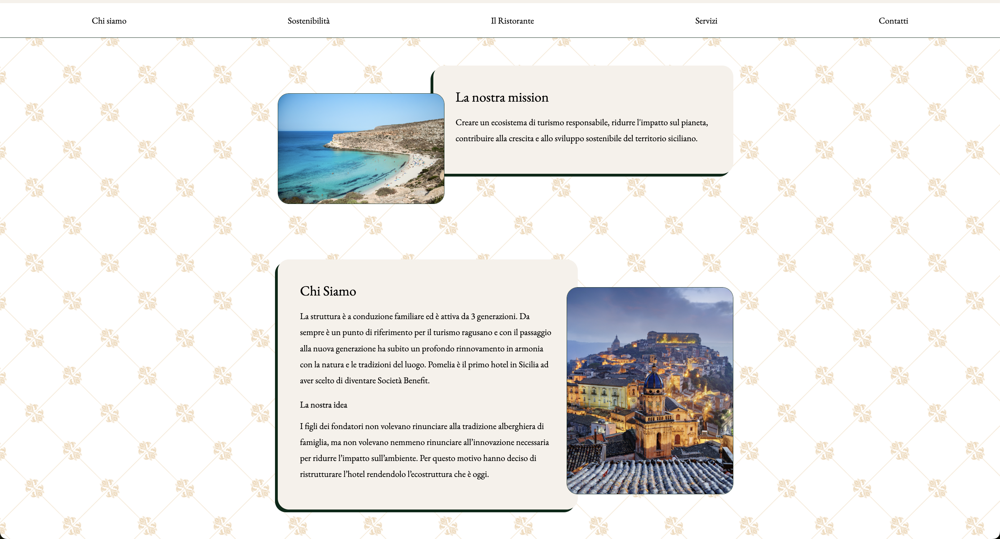
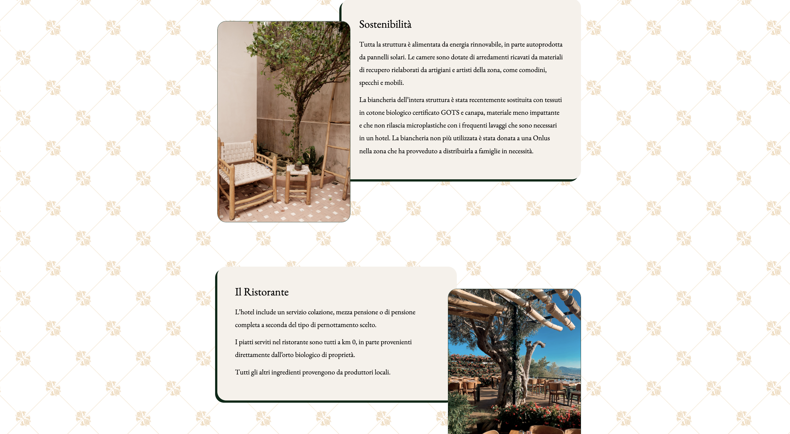
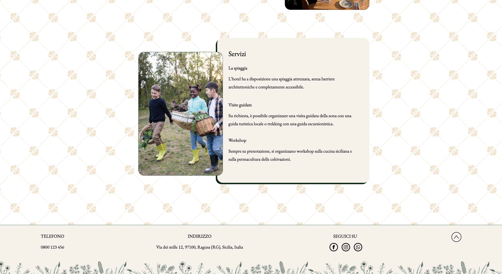
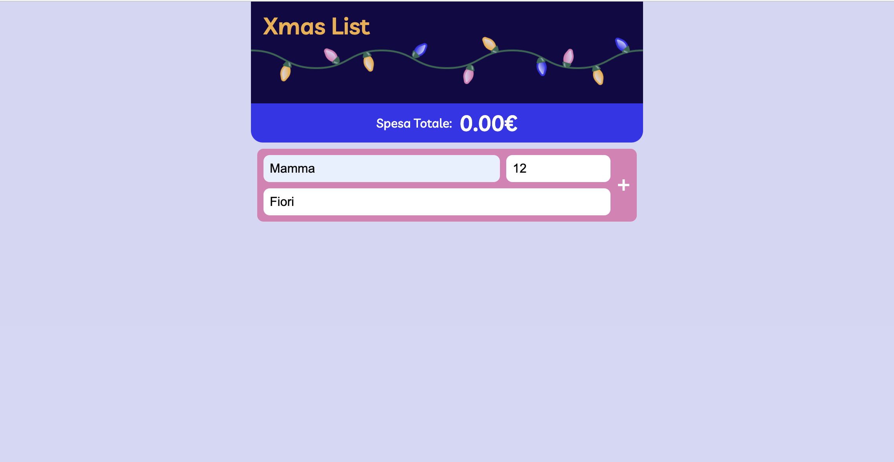
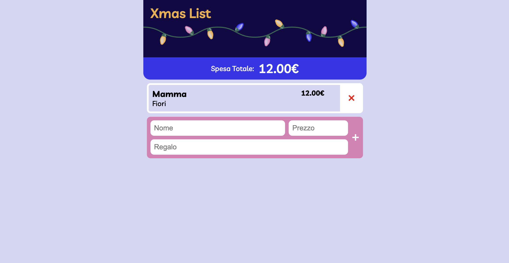
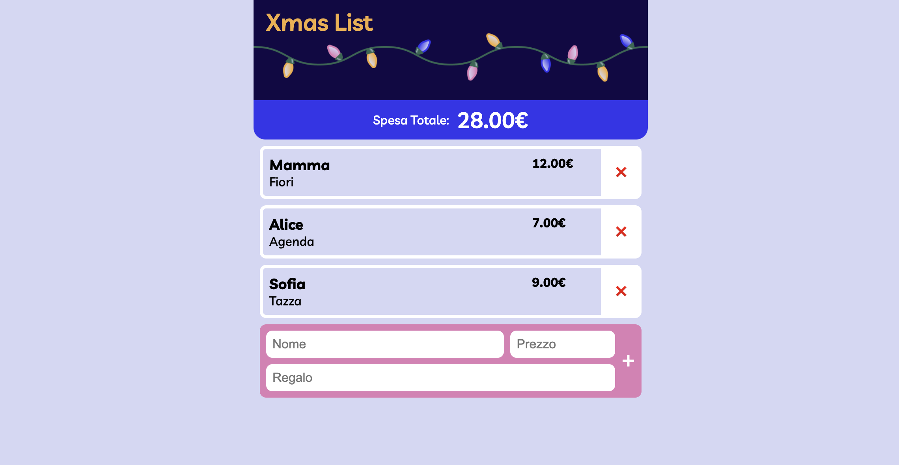

Hotel Pomelia (Start to Impact Project)
L'obiettivo del progetto era quello di creare una landing page per un eco hotel nel cuore di Ragusa, rendendo chiara la loro mission di sostenibilità attraverso le varie iniziative e i servizi offerti.
La struttura della pagina è semplice e lineare, i principali colori scelti sono il beige e il verde scuro per ricordare sia la pietra calcarea usata in molte chiese siciliane, sia il verde delle riserve naturali che circondano Ragusa stessa.
Infine, per lo sfondo è stato scelta una decorazione che ricorda il barocco.
La barra di navigazione guida nelle varie sezioni che si possono vedere anche scorrendo nella pagina.
Infine il footer ricapitola le informazioni principali e indirizza alle pagine social della struttura, mentre una freccia permette di tornare in alto nella pagina.
Tecnologie utilizzate
HTML, CSS, BOOTSTRAP




Lista regali di natale (Boolean Project)
L'obiettivo del progetto era quello di creare una lista dinamica per la gestione dei regali di Natale. L'interfaccia permette di inserire tramite un form un nome, un prezzo e una descrizione per il regalo che potrà essere aggiunto in lista cliccando sul pulsante +. L'elemento viene così aggiunto in una lista e viene aggiornato il campo della 'spesa totale'. E' poi possibile aggiungere un altro elemento oppure rimuovere quelli già presenti cliccando il pulsante x.
Tecnologie utilizzate
HTML, CSS, BOOTSTRAP, JAVASCRIPT




Youtube copy (YT Tutorial Project)
L'obiettivo del progetto era quello di raffigurare fedelmente la pagina home di youtube per sperimentare e approfondire la libreria Bootstrap v5.0
Tecnologie utilizzate
HTML, CSS, BOOTSTRAP